by Samia A. Halaby
To be conducted at The International Center of BeitLahem
In cooperation with Faten Nastas Mitwasi, Art Coordinator
1.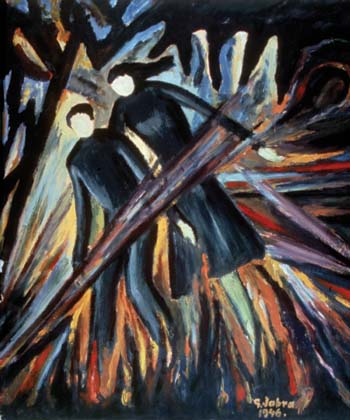
1. Jabra Ibrahime Jabra, "Air Raid," 1946. Oil on paper.
2. Mustafa Al Hallaj, "Battle of Karameh," 1969. Masonite cut, 31 x 41.5 cm.
3. Mustafa Al Hallaj, untitled, 1979. Masonite cut on paper. 50 x 70 cm.
4.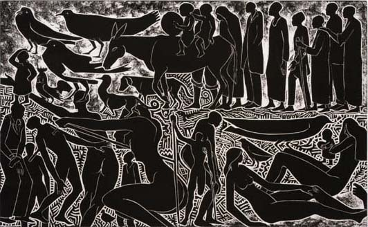
4. Mustafa Al Hallaj, untitled, 1980. Masonite cut, 70 x 99 cm.
5.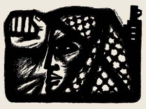
5. Burhan Karkutly, "Yes to Palestine," 1982. Ink on paper.
6.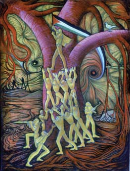 7.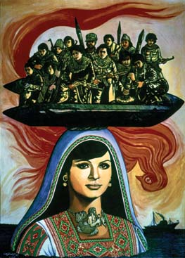
6. Abdal Rahman Al Mozayen, "Fighters," 1971. Oil on canvas, 70 x 50 cm.
7. Abdal Rahman Al Mozayen, "The Martyr Dallal Al Mughraby," 1987. Oil on canvas, 80 x 60 cm.
8.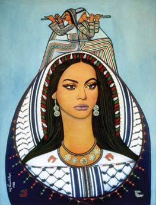
9.
8. Abdal Rahman al Mozayen, "Hope and Return," 1986. Oil on canvas, 80 x 60 cm.
9. Abdal Rahman Al Mozayen, "Intifada: Against Fascism," 1988. Ink on paper, 65 x 50 cm.
10. 11.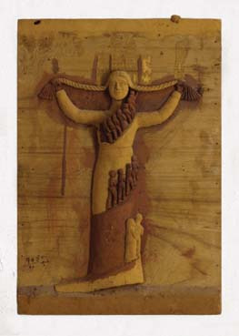
11.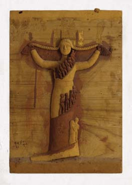
10. Abdul Hay Musallam, "Namibia," 1986. Painted wood relief, 75 x 50.5 cm.
11. Abdul Hay Musallam, "The Certain Necessity of Victory," 1995. Painted wood relief, 63 x 44 cm.
12.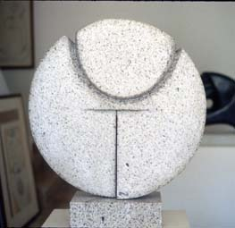 13.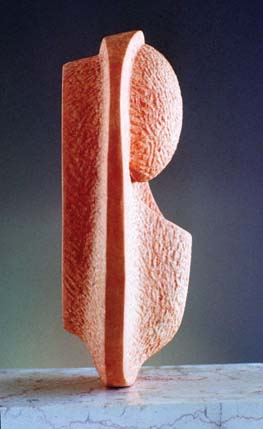
12. Mona Saudi, Dawn, 1986. Canadian granite, 55 x 55 x 14 cm.
13. Mona Saudi, Fertility, circa 1991. Jordanian pink limestone, 25 x 20 x 10 cm.
14.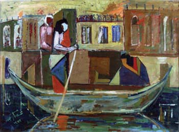
14. Isam Badr, "There Was Love," 1973. Oil on canvas, 80 x 100 cm.
15.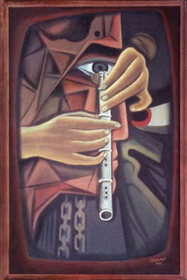
15.Kamel Al Mughanni, "Continuity of the Tune," 1974.
16.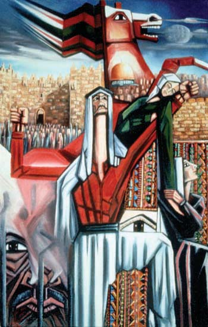 17.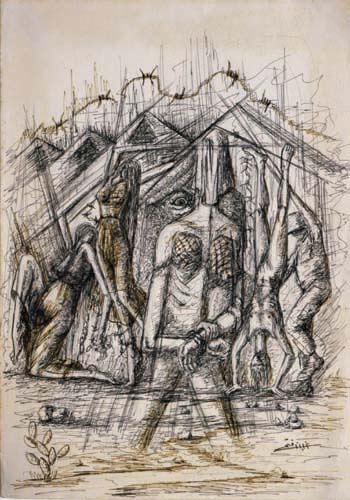
16. Fathi Ghaban, "Hawiyya" (Identity), 1980. Oil on canvas, 100 x 70 cm.
17. Fathi Ghaban, "Torture at Ansar Prison," 1984. Pen on paper, 35 x 25 cm.
18.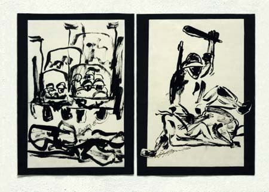
18. left: Fayez Sersawi, Path of Destruction, 1988. Ink on paper, 38 x 26 cm.
18. right: Fayez Sersawi, Rabine Policy Breaking Bones, 1988. Ink on paper, 38 x 27 cm.
19.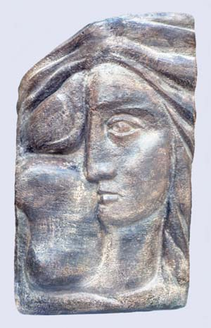
19. Fayez Sersawi, A Bird Living in a Woman�s Hair, 1992. Stone, 60 x 30 cm.
20.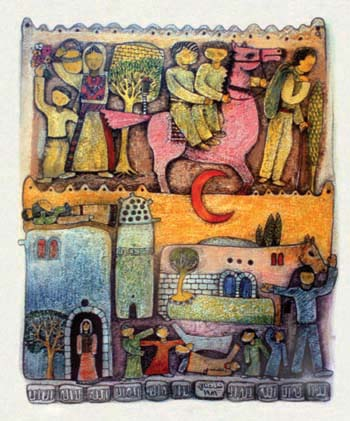
20. Nabil Anani, "Beit Rifa," 1985. Watercolor on paper, 42 x 30 cm.
21.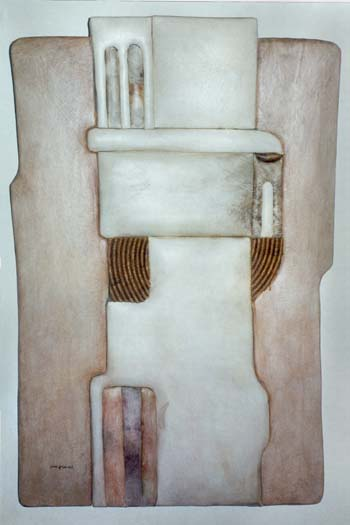 22.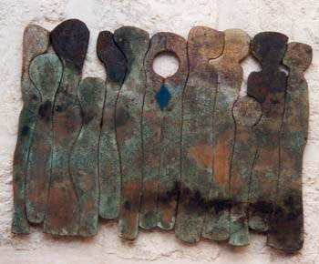
21. Nabil Anani, "Village Construction," 1993. Leather and straw, 85 x 60 cm.
22. Nabil Anani, "Solidarity," 1994. Mixed media on wood, 60 x 85 cm.
23.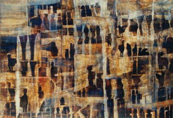 24.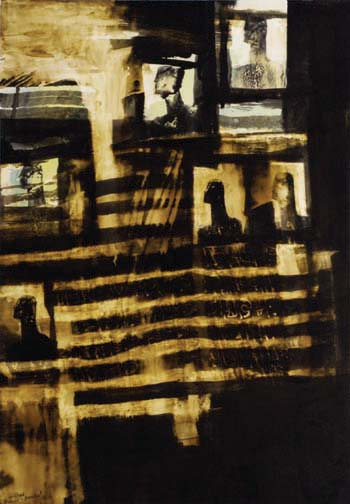
23. Tayseer Barakat, untitled, 1992. Watercolors on paper, 70 x 50 cm.
24. Tayseer Barakat, untitled, 2001. Ink and dyes on paper, 68 x 48 cm.
25. 26.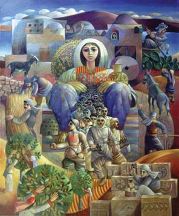
26.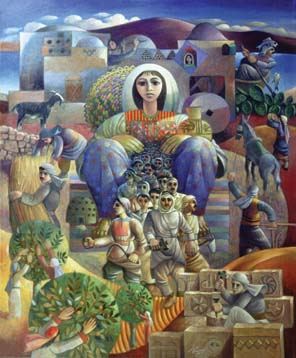
25. Sliman Mansour, "U.N. Relief," 1984. Oil on canvas, 80 x 60 cm.
26. Sliman Mansour, "The Village Awakens," 1988. Oil on canvas, 90 x 115 cm.
27. 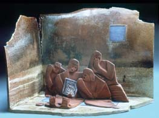
28. 
27. Vera Tamari, "Rhythms of the Past II," 1994. Assembled ceramic sculpture, 14 x 20 x 17 cm.
28. Vera Tamari, "Um Al Shaheed" (Mother of the Martyr), 1989. Ceramic sculpture, 30 x 28 x 16 cm.
29. 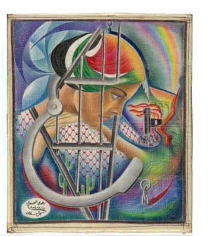 30. 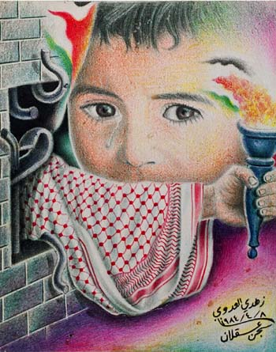
29. Zuhdie Al Adawi, "Day of the Palestinian Prisoner," August 21, 1984. 15 � x 13 �".
30. Zuhdie Al Adawi, "Hope," August 25, 1984. 14 � x 11 3/8"
31.  32. 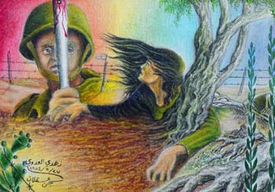
32. 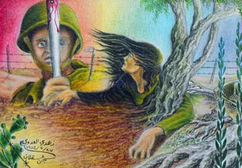
31. Zuhdie Al Adawi, "Stronger than the Battering Rod," 1984. Crayons on cloth, 16 x 12 cm.
32. Zuhdie Al Adawi, 1984. Crayons on cloth, 16 x 12 cm.
33. 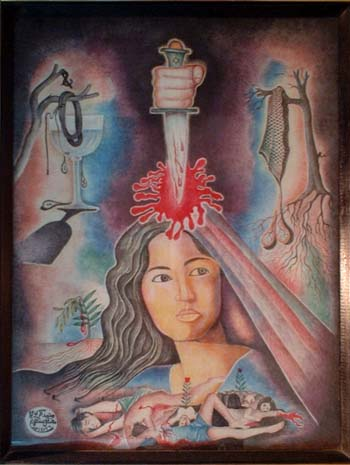 34. 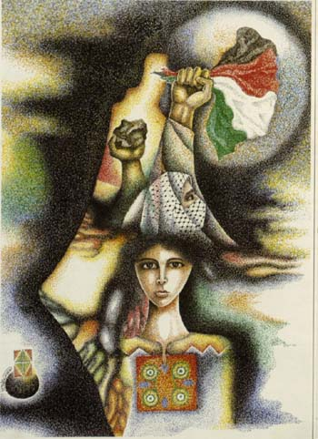
33. Muhammad Al Rakoui, untitled, 1983. Mixed media on cloth, 39 x 30 cm.
34. Muhammad Al Rakoui, untitled, 1999. Lithograph, 14 x 24"
="pointer-events:none;cursor:default;" href="http://www.art.net/">
![[Art on the Net]](/images/artnet_button.gif)